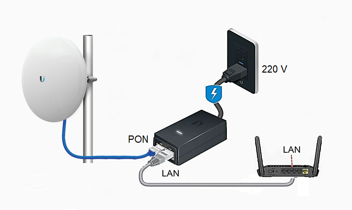
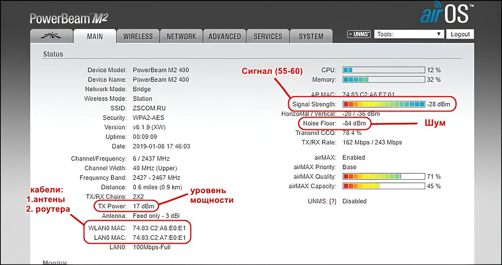
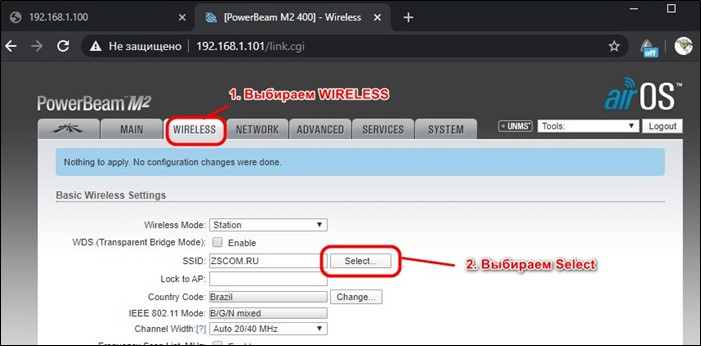
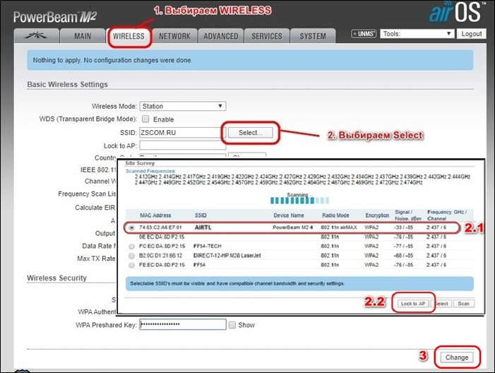
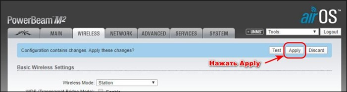

Проверка WI-FI (антена)
При отсутствии интернета необходимо проверить блок питания антенны, а также проверить cхему
подключения роутера к блоку питания антенны.Необходимо убедиться в следующем:
• Проверьте включен ли блок питания антенны к сети электропитания. На блоке питания должен загореться светодиод.
• Проверить провод от антенны к блоку питания и роутеру. Необходимо сначала подключить провод, который спускается от антенны (с крыши дома и заходит во внутрь дома), к блоку питания антенны в разъем POE.
• Проверить провод от роутера к блоку питания антенны. Необходимо взять патч-корд (короткий кабель с коннекторами) и подключить его с одной стороны к разъему LAN блока питания антенны, с другой стороны к разъему WAN роутера.
Что делать, если у меня пропал интернет?
• Перезагрузить оборудование. Отключить от сети 220В блок питания антенны и блок питания роутера и включить обратно.
• Проверить правильность подключения кабелей к блоку питания антенны и Wi-Fi роутера, коннекторы должны плотно входить в разъемы до щелчка.

Проверка через ip-адрес антенны:
Логин абонента копируем ставим в сессию. Копируем ip-адрес сессии заходим через браузер на антенну, видим сигналы антенны. Если в пределах до 60 то нормально если нет, то меняем сектор. Во вкладке MAIN есть 2 графика WLAN (кабель антенны) и LAN (кабель роутера). Если сессии нет, просим включить антенну, проверить кабели.

Меняем сектор - Перейти в WIRELESS, в пункте SSID нажать кнопку SELECT.

Выбираем сектора с лучшим сигналом под названием AIRTL нажимаем на Loсk to AP, далее нажимаем на Change. Потом Apply.


Для перезагрузи заходим в SYSTEM и нажимаем REBOOT
• Если сигнал с антенны плохой - перенаправить на другой сектор.
• Если нет на секторе - отправить инженера.
• Когда переходим по ip-адресу антенны, смотрим есть ли роутер, если его нет, то просим вытащить LAN кабель и вставить обратно и просим вытащить блок питания роутера и вставить обратно.
• Если, нет сессии - проверить есть ли на секторе, если есть то - просим вытащить кабель POE если и так не работает просим вытащить питание роутера и вставить обратно, если и так не получается отправить инженера с причиной посмотреть на месте.
Проверка скорости Антенны – Tools > Speed test для тарелки
- 185.x.4.17
- user
- reader